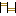

CS02 - REMOTE OPERATION
Direct link toward element page
Titles referencing the Element
 CapabilityRealizationPkg - CS02 - REMOTE OPERATION
CapabilityRealizationPkg - CS02 - REMOTE OPERATION FunctionalChain - CS02 - REMOTE OPERATION
FunctionalChain - CS02 - REMOTE OPERATION CapabilityPkg - CS02 - REMOTE OPERATION
CapabilityPkg - CS02 - REMOTE OPERATION
Scenario - [ES] CS02 - REMOTE OPERATION